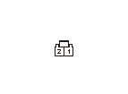

車いす電動ウインチ システム症状別故障診断 - 車いすがまっすぐ引込めない/送出せない
車いすがまっすぐ引込めない/送出せない
•
車いすにウィンチベルトを取付ける際、左右のウィンチベルトに均等な力がかかるよう、同じ位置、高さに取付ける
•
バッテリの電圧が11V以上であることを確認する
再現テスト1
1-1
テールゲートを閉めてから再度開ける
1-2
主電源スイッチをONにする
1-3
ベルトフリー操作あるいはトランスミッタ操作でウィンチベルトを引出す
1-4
ウィンチベルトを離したときのホイール チェア テンション モータの作動を確認する
◆ ホイール チェア テンション モータは作動しているか
YES
-
ステップ
2
へ進む
NO
-
症状別故障診断“ウィンチベルトの弛みが取れない/収納できない”を行う
作動音の確認
2-1
ウィンチベルトのフック部を持ち、トランスミッタ操作でウィンチベルトの操作を行う
2-2
操作時の作動音を確認する
◆ 速度の遅いホイール チェア ドライブAssy.からラチェット音（カチカチ音）がするか
YES
-
ステップ
3
へ進む
NO
-
ステップ
4
へ進む
ラチェットの入力点検
3-1
ホイール チェア ドライブAssy.を取外す
3-2
ホイール チェア テンション モータを取外す
3-3
ホイール チェア ドライブAssy.カプラC（2P）のNo1.端子にバッテリの（＋）をNo2.端子にバッテリの（－）端子を瞬時に接続させる
バッテリ
ホイール チェア ドライブAssy.カプラ
＋
C1
－
C2
◆ ラチェットの作動は正常か
YES
-
ラチェットとホイール チェア ドライブAssy.のギヤ部を点検し、異常なければステップ
4
へ進む
NO
-
ホイール チェア ドライブAssy.を交換する（ホイール チェア ドライブ モータの交換は不要）
再現テスト2（入替え確認）
4-1
L側とR側のホイール チェア ドライブAssy.を取外す
4-2
L側とR側のホイール チェア ドライブAssy.を入替えて取付ける
4-3
ウィンチベルトを車いすに取付け、荷重をかけて再度動作を確認する
◆ 同じホイール チェア ドライブAssy.に速度の遅れが確認できるか
YES
-
ホイール チェア ドライブAssy.を交換する
NO
-
ホイール チェア ドライブ コントロール ユニットの入力点検を行い
、全て正常であれば
ホイール チェア ドライブ コントロール ユニットを交換する
